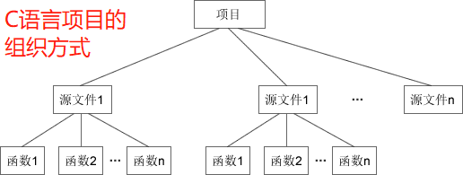

- 1、C++的类和对象
- 2、如何编译和运行C++程序
- 3、C++命名空间
- 4、C++输入输出（cin 和 cout）
- 5、C++变量的定义位置
- 6、C++布尔类型（bool）
- 7、C++中 const 的新玩法
- 8、C++ new 和 delete 运算符简介
- 9、C++内联函数（inline）
- 内联函数可以用来代替带参数的宏
- 规范地使用内联函数
- 10、C++函数的默认参数
- 在声明中还是在定义中指定默认参数
- 11、C++函数重载
- 函数重载过程中的二义性和类型转换
- C++ 中的类（Class）可以看做C语言中结构体（Struct）的升级版。
- C++ 中的类也是一种构造类型，但是进行了一些扩展，类的成员不但可以是变量，还可以是函数；通过类定义出来的变量也有特定的称呼，叫做“对象”。
- 结构体和类都可以看做一种由用户自己定义的复杂数据类型，在C语言中可以通过结构体名来定义变量，在 C++ 中可以通过类名来定义变量。不同的是，通过结构体定义出来的变量还是叫变量，而通过类定义出来的变量有了新的名称，叫做对象（Object）。
- 可以将类比喻成图纸，对象比喻成零件，图纸说明了零件的参数（成员变量）及其承担的任务（成员函数）；一张图纸可以生产出多个具有相同性质的零件，不同图纸可以生产不同类型的零件。
- 类只是一张图纸，起到说明的作用，不占用内存空间；对象才是具体的零件，要有地方来存放，才会占用内存空间。
- 在 C++ 中，通过类名就可以创建对象，即将图纸生产成零件，这个过程叫做类的实例化，因此也称对象是类的一个实例（Instance）。
- 有些资料也将类的成员变量称为属性（Property），将类的成员函数称为方法（Method）。
- 面向对象编程（Object Oriented Programming，OOP）
- 因为 C++、Java、C#、PHP 等语言都支持类和对象，所以使用这些语言编写程序也被称为面向对象编程，这些语言也被称为面向对象的编程语言。C语言因为不支持类和对象的概念，被称为面向过程的编程语言。
- 在C语言中，我们会把重复使用或具有某项功能的代码封装成一个函数，将拥有相关功能的多个函数放在一个源文件，再提供一个对应的头文件，这就是一个模块。使用模块时，引入对应的头文件就可以。
- 而在 C++ 中，多了一层封装，就是类（Class）。类由一组相关联的函数、变量组成，你可以将一个类或多个类放在一个源文件，使用时引入对应的类就可以。
- 下面是C和C++项目组织方式的对比：
 
- 面向对象编程在代码执行效率上绝对没有任何优势，它的主要目的是方便程序员组织和管理代码，快速梳理编程思路，带来编程思想上的革新。
- 面向对象编程是针对开发中大规模的程序而提出来的，目的是提高软件开发的效率。
- 不要把面向对象和面向过程对立起来，面向对象和面向过程不是矛盾的，而是各有用途、互为补充的。
- 如果你希望开发一个贪吃蛇游戏，类和对象或许是多余的，几个函数就可以搞定；但如果开发一款大型游戏，那你绝对离不开面向对象。

- C++ 源文件的后缀
- C语言源文件的后缀非常统一，在不同的编译器下都是 .c 。C++ 源文件的后缀则有些混乱，不同的编译器支持不同的后缀，下表示一个简单的汇总：

- UNIX 是昂贵的商业操作系统，初学者几乎用不到；
- Microsoft Visual C++ 是微软的 C/C++ 编译器，VC 6.0、VS 都使用该编译器。
- 推荐使用.cpp作为 C++ 源文件的后缀，这样更加通用和规范。
- g++ 命令
- Linux GCC 中有一个g++命令，它专门用来编译 C++ 程序，广大 C++ 开发人员也都使用这个命令。
- 编译单个源文件： g++ main.cpp
- 编译多个源文件： g++ main.cpp module.cpp
- 使用-o选项可以指定可执行文件的名称： g++ main.cpp -o demo
- 在C语言中，我们使用gcc命令来编译和链接C程序。我们也可以增加-lstdc++选项（ 否则会发生链接错误），来编译 C++ 程序。

- 但是让用户指定参数是一种不明智的行为，不但增加了学习成本，还使得操作更加复杂，所以后来 GCC 又针对不同的语言推出了不同的命令，例如
- g++命令用来编译 C++，
- gcj命令用来编译 Java，
- gccgo命令用来编译Go语言。
- 在以后使用 Linux GCC 时，我推荐使用g++命令来编译 C++ 程序，这样更加简洁和规范。
- 命名空间概念的由来
- C++ 是在C语言的基础上开发的，早期的 C++ 还不完善，不支持命名空间，没有自己的编译器，而是将 C++ 代码翻译成C代码，再通过C编译器完成编译。
- 这个时候的 C++ 仍然在使用C语言的库，stdio.h、stdlib.h、string.h 等头文件依然有效；
- 此外 C++ 也开发了一些新的库，增加了自己的头文件，例如：
- iostream.h：用于控制台输入输出头文件。
- fstream.h：用于文件操作的头文件。
- complex.h：用于复数计算的头文件。
- 和C语言一样，这个时期的C++ 头文件仍然以.h为后缀，它们所包含的类、函数、宏等都是全局范围的。
- 标准命名空间 std：后来 C++ 引入了命名空间的概念，计划重新编写库，将类、函数、宏等都统一纳入一个命名空间，这个命名空间的名字就是 std。
- std 是 standard 的缩写，意思是“标准命名空间”。
- 但是这时已经有很多用老式 C++ 开发的程序了，它们的代码中并没有使用命名空间，直接修改原来的库会带来一个很严重的后果：程序员会因为不愿花费大量时间修改老式代码而极力反抗，拒绝使用新标准的 C++ 代码。
- C++ 开发人员想了一个好办法，保留原来的库和头文件，它们在 C++ 中可以继续使用，然后再把原来的库复制一份，在此基础上稍加修改，把类、函数、宏等纳入命名空间 std 下，就成了新版 C++ 标准库。
- 这样共存在了两份功能相似的库，
- 使用了老式 C++ 的程序可以继续使用原来的库，
- 新开发的程序可以使用新版的 C++ 库。
- 为了避免头文件重名，新版 C++ 库也对头文件的命名做了调整：
- 去掉了后缀 .h ，所以老式 C++ 的 iostream.h 变成了 iostream ，fstream.h 变成了 fstream。
- 而对于原来C语言的头文件，也采用同样的方法，但在每个名字前还要添加一个 c 字母，所以C语言的 stdio.h 变成了 cstdio，stdlib.h 变成了 cstdlib。
- 需要注意的是，旧的 C++ 头文件是官方所反对使用的，已明确提出不再支持，但旧的C头文件仍然可以使用，以保持对C的兼容性。实际上，编译器开发商不会停止对客户现有软件提供支持，可以预计，旧的 C++ 头文件在未来数年内还是会被支持。
- C++头文件的现状
- 旧的 C++ 头文件，如 iostream.h、fstream.h 等将会继续被支持，尽管它们不在官方标准中。这些头文件的内容不在命名空间 std 中。
- 新的 C++ 头文件，如 iostream、fstream 等包含的基本功能和对应的旧版头文件相似，但头文件的内容在命名空间 std 中。
- 注意：在标准化的过程中，库中有些部分的细节被修改了，所以旧的头文件和新的头文件不一定完全对应。
- 标准C头文件如 stdio.h、stdlib.h 等继续被支持。头文件的内容不在 std 中。
- 具有C库功能的新C++头文件具有如 cstdio、cstdlib 这样的名字。它们提供的内容和相应的旧的C头文件相同，只是内容在 std 中。
- 可以发现，
- 对于不带 .h 的头文件，所有的符号都位于命名空间 std 中，使用时需要声明命名空间 std；
- 对于带 .h 的头文件，没有使用任何命名空间，所有符号都位于全局作用域。这也是 C++ 标准所规定的。

- 尽量只使用C++头文件
- 虽然 C++ 几乎完全兼容C语言，C语言的头文件在 C++ 中依然被支持，但 C++ 新增的库更加强大和灵活，请读者尽量使用这些 C++ 新增的头文件，例如 iostream、fstream、string 等，而且尽量不要将C代码和C++代码混合在一起。
- 声明命名空间 std
- 使用语句：
using namespace std; //声明了命名空间 std
- 后续如果有未指定命名空间的符号，那么默认使用 std，示例代码中的 string、cin、cout 都位于命名空间 std。
- 在 main() 函数中声明命名空间 std，它的作用范围就位于 main() 函数内部，如果在其他函数中又用到了 std，就需要重新声明，
- 如果希望在所有函数中都使用命名空间 std，可以将它声明在全局范围中。
- 很多教程中都是这样做的，将 std 直接声明在所有函数外部，这样虽然使用方便，但在中大型项目开发中是不被推荐的，这样做增加了命名冲突的风险，我推荐在函数内部声明 std。
- 内置对象
- cout 和 cin 都是 C++ 的内置对象，而不是关键字。C++ 库定义了大量的类（Class），程序员可以使用它们来创建对象，cout 和 cin 就分别是 ostream 和 istream 类的对象，只不过它们是由标准库的开发者提前创建好的，可以直接拿来使用。这种在 C++ 中提前创建好的对象称为内置对象。
- 使用 cout 进行输出时需要紧跟<<运算符，使用 cin 进行输入时需要紧跟>>运算符，这两个运算符可以自行分析所处理的数据类型，因此无需像使用 scanf 和 printf 那样给出格式控制字符串。
- cin 也是支持对多个变量连续输入的， 默认以空格分隔。例如： cin>>x>>y;
- cout 也能够连续地输出，例如： cout<<"The int number is x= "<<x<<endl;
- 其中 endl 表示换行，与C语言里的 \n 作用相同。当然这段代码中也可以用 \n 来替代 endl，这样就得写作： cout<<"Please input an int number:\n";
- endl 最后一个字符是字母“l”，而非阿拉伯数字“1”，它是“end of line”的缩写。
- C89 规定，所有局部变量都必须定义在函数开头，在定义好变量之前不能有其他的执行语句。C99 标准取消这这条限制，但是 VC/VS 对 C99 的支持很不积极，仍然要求变量定义在函数开头。
- GCC、Xcode 对 C99 的支持非常好，可以在函数的任意位置定义变量；
- 但 VC/VS 对 C99 的支持寥寥无几，必须在函数开头定义好所有变量。
- 将上面的代码再保存到源文件 main.cpp，那么它在 GCC、Xcode、VC/VS 下都可以编译通过。这是因为 C++ 取消了原来的限制，变量只要在使用之前定义好即可，不强制必须在函数开头定义所有变量。
- 在 for 内部定义循环控制变量 i，会让代码看起来更加紧凑，并使得 i 的作用域被限制在整个 for 循环语句内部（包括循环条件和循环体），减小了命名冲突的概率。在以后的编码过程中，我推荐这种写法。
- 注意源文件的后缀，.c 是C语言代码，.cpp 是C++代码，它们的编译方式不同。
- C语言并没有彻底从语法上支持“真”和“假”，只是用 0 和非 0 来代表。这点在 C++ 中得到了改善，C++ 新增了 bool 类型（布尔类型），它一般占用 1 个字节长度。bool 类型只有两个取值，true 和 false：
- true 表示“真”，false 表示“假”。
- 注意，true 和 false 是 C++ 中的关键字，true 表示“真”，false 表示“假”。
- 遗憾的是，在 C++ 中使用 cout 输出 bool 变量的值时还是用数字 1 和 0 表示，而不是 true 或 false。
bool flag; //定义布尔类型的变量，flag 是变量名。
- 在以后的编码中，个人推荐使用 bool 变量来表示逻辑运算、关系运算以及开关变量的值。
- C++中的 const 更像编译阶段的 #define
- 在C语言中，const 用来限制一个变量，表示这个变量不能被修改，我们通常称这样的变量为常量（Constant），
- C语言对 const 的处理和普通变量一样，会到内存中读取数据；C++ 对 const 的处理更像是编译时期的#define，是一个值替换的过程。
- C++ 对 const 的处理少了读取内存的过程，优点是提高了程序执行效率，缺点是不能反映内存的变化，一旦 const 变量被修改，C++ 就不能取得最新的值。

- C++中全局 const 变量的可见范围是当前文件
- C语言中，普通全局变量的作用域是整个程序，在其它源文件中也是可见的，使用extern声明后就可以在其它源文件（包括 .c 和 .h 文件）中使用。C语言中的 const 变量在多文件编程时的表现和普通全局变量一样，除了不能修改，没有其他区别。
- 而C++中 const 全局变量的可见范围仅限于当前源文件，在其它源文件中不可见，即使在其它源文件中使用 extern 声明也不行（会导致程序报错）， 这和添加了 static 关键字的效果类似。
- 但是，这也带来了一个好处，编程的时候可以将 const全局变量 可以定义在头文件中（注意是定义，而不是用 extern 声明），这样即使头文件被包含多次也不会出错。

- 在C语言中，动态分配内存用 malloc() 函数，释放内存用 free() 函数。如下所示：

- 在 C++ 中，这两个函数仍然可以使用，但是C++又新增了两个关键字，new 和 delete：
- new 用来动态分配内存，
- delete 用来释放内存。

- 在C++中，建议使用 new 和 delete 来管理内存，它们可以使用C++的一些新特性，最明显的是可以自动调用构造函数和析构函数。
- 函数调用是有时间和空间开销的。 如果函数体代码比较多，需要较长的执行时间，那么函数调用机制占用的时间可以忽略；如果函数只有一两条语句，那么大部分的时间都会花费在函数调用机制上，这种时间开销就就不容忽视。
- 内联函数（inline）
- 为了消除函数调用的时空开销，C++ 提供一种提高效率的方法，即在编译时在函数调用处用函数体替换，类似于C语言中的宏展开。这种在函数调用处直接嵌入函数体的函数称为内联函数 ，又称内嵌函数或者内置函数。
- 指定内联函数的方法很简单，只需要在函数定义处增加 inline 关键字。
- 注意，要在函数定义处添加 inline 关键字，在函数声明处添加 inline 关键字虽然没有错，但这种做法是无效的，编译器会忽略函数声明处的 inline 关键字。
- 当函数比较复杂时，函数调用的时空开销可以忽略，大部分的 CPU 时间都会花费在执行函数体代码上，而使用内联函数的缺点也是非常明显的，编译后的程序会存在多份相同的函数拷贝，如果被声明为内联函数的函数体非常大，那么编译后的程序体积也将会变得很大，所以再次强调，一般只将那些短小的、频繁调用的函数声明为内联函数。
- 由于内联函数比较短小，我们通常的做法是省略函数原型（也就是声明），将整个函数定义（包括函数头和函数体）放在本应该提供函数原型的地方。

- 对函数作 inline 声明只是程序员对编译器提出的一个建议，而不是强制性的，并非一经指定为 inline 编译器就必须这样做。编译器有自己的判断能力，它会根据具体情况决定是否这样做。
- 宏定义是一项“细密”的工作，一不小心就会踩坑，而且不一定在编译和运行时发现，给程序埋下隐患。 如果将宏替换为内联函数，情况就没有那么复杂了，所以在编写C++代码时推荐使用内联函数来替换带参数的宏。
- 和宏一样，内联函数可以定义在头文件中（不用加 static 关键字），并且头文件被多次 #include 后也不会引发重复定义错误。
- 这一点和非内联函数不同，非内联函数是禁止定义在头文件中的，它所在的头文件被多次 #include 后会引发重复定义错误。
- 内联函数在编译时会将函数调用处用函数体替换，编译完成后函数就不存在了，所以在链接时不会引发重复定义错误。这一点和宏很像，宏在预处理时被展开，编译时就不存在了。从这个角度讲，内联函数更像是编译期间的宏。
- 内联函数主要有两个作用：
- 一是消除函数调用时的开销，
- 二是取代带参数的宏。
- 不过推荐后者，因为取代带参数的宏更能凸显内联函数存在的意义。
- inline 关键字可以只在函数定义处添加，也可以只在函数声明处添加，也可以同时添加；但是在函数声明处添加 inline 关键字是无效的，编译器会忽略函数声明处的 inline 关键字。也就是说，inline 是一种“用于实现的关键字”，而不是一种“用于声明的关键字”。
- 尽管大多数教科书中在函数声明和函数定义处都增加了 inline 关键字，但我认为 inline 关键字不应该出现在函数声明处。这个细节虽然不会影响函数的功能，但是体现了高质量 C++ 程序设计风格的一个基本原则：声明与定义不可混为一谈，用户没有必要、也不应该知道函数是否需要内联。
- 更为严格地说，内联函数不应该有声明，应该将函数定义放在本应该出现函数声明的地方，这是一种良好的编程风格。
- 在多文件编程中，我们通常将函数的定义放在源文件中，将函数的声明放在头文件中，希望调用函数时，引入对应的头文件即可，我们鼓励这种将函数定义和函数声明分开的做法。但这种做法不适用于内联函数，将内联函数的声明和定义分散到不同的文件中会出错，请看下面这个错误的例子。

- 内联函数虽然叫做函数，在定义和声明的语法上也和普通函数一样，但它已经失去了函数的本质。函数是一段可以重复使用的代码，它位于虚拟地址空间中的代码区，也占用可执行文件的体积，而内联函数的代码在编译后就被消除了，不存在于虚拟地址空间中，没法重复使用。
- 在多文件编程时，建议将内联函数的定义直接放在头文件中，并禁用内联函数的声明（声明是多此一举）。
- 类似C++的 const 全局变量。
- 默认参数
- 在 C++ 中，定义函数时可以给形参指定一个默认的值，这样调用函数时如果没有给这个形参赋值（没有对应的实参），那么就使用这个默认的值。也就是说，调用函数时可以省略有默认值的参数。如果用户指定了参数的值，那么就使用用户指定的值，否则使用参数的默认值。
- 为参数指定默认值非常简单，直接在形参列表中赋值即可，与定义普通变量的形式类似。
- 指定了默认参数后，调用函数时就可以省略对应的实参了。
- 默认参数除了使用数值常量指定，也可以使用表达式指定。
- C++规定，默认参数只能放在形参列表的最后，而且一旦为某个形参指定了默认值，那么它后面的所有形参都必须有默认值。
- 实参和形参的传值是从左到右依次匹配的，默认参数的连续性是保证正确传参的前提。
- 在以后设计类时你将发现，通过使用默认参数，可以减少要定义的析构函数、方法以及方法重载的数量。
//在函数定义处指定默认参数
void func(int n, float b=1.2, char c='@')
{
cout<<n<<", "<<b<<", "<<c<<endl;
}
- 除了在函数定义处，我们也可以在函数声明处指定默认参数。不过当出现函数声明时情况会变得稍微复杂，有时候你可以在声明处和定义处同时指定默认参数，有时候你只能在声明处指定。这是因为C++ 规定，在给定的作用域中（比如同一个源文件中）只能指定一次默认参数。
- 编译器使用的是当前作用域中的默认参数。站在编译器的角度看，它不管当前作用域中是函数声明还是函数定义，只要有默认参数就可以使用。
- 原文中举了一组对比例子：
- 对于示例1，func() 的定义和声明位于同一个源文件，它们的作用域也都是整个源文件，这样就导致在同一个文件作用域中指定了两次默认参数，违反了 C++ 的规定。
- 对于示例2，func() 的声明位于 main.cpp，作用域也是 main.cpp，而 func() 的定义位于 module.cpp，作用域也是 module.cpp，func() 的声明和定义位于不同的作用域，相互之间不影响。
- C语言有四种作用域，分别是
- 函数原型作用域（声明）
- 局部作用域（函数作用域）
- 块作用域
- 文件作用域（全局作用域）
- C++ 也有这几种作用域。
- 多次声明同一个函数
- 在多文件编程时，我们通常的做法是将函数声明放在头文件中，并且一个函数只声明一次，但是多次声明同一函数也是合法的。
- 不过有一点需要注意，在给定的作用域中一个形参只能被赋予一次默认参数。换句话说，函数的后续声明只能为之前那些没有默认值的形参添加默认值，而且该形参右侧的所有形参必须都有默认值。

- 在实际开发中，有时候我们需要实现几个功能类似的函数，只是有些细节不同。例如希望交换两个变量的值，这两个变量有多种类型，可以是 int、float、char、bool 等，我们需要通过参数把变量的地址传入函数内部。
- 在C语言中，程序员往往需要分别设计出三个不同名的函数，其函数原型与下面类似：

- 但在C++中，这完全没有必要。在C++中，上面这四个函数的名称都可以命名为 Swap。
- 使用 Swap 这个函数名，而不是使用 swap，是因为 C++ 标准库已经提供了交换两个变量的值的函数，它的名字就是 swap，位于 algorithm 头文件中，为了避免和标准库中的 swap 冲突，本例特地将 S 大写。
- 读者在以后的编码过程中也应该坚持使用标准库中的 swap()。
- 通过本例可以发现，重载就是在一个作用范围内（同一个类、同一个命名空间等）有多个名称相同但参数不同的函数。重载的结果是让一个函数名拥有了多种用途，使得命名更加方便（在中大型项目中，给变量、函数、类起名字是一件让人苦恼的问题），调用更加灵活。
- 函数重载（Function Overloading）：
- C++ 允许多个函数拥有相同的名字，只要它们的参数列表不同就可以，这就是函数的重载。借助重载，一个函数名可以有多种用途。
- 参数列表又叫参数签名，包括参数的类型、参数的个数和参数的顺序，只要有一个不同就叫做参数列表不同。
- 注意，参数列表不同包括参数的个数不同、类型不同或顺序不同，仅仅参数名称不同是不可以的。函数返回值也不能作为重载的依据。
- 在使用重载函数时，同名函数的功能应当相同或相近，不要用同一函数名去实现完全不相干的功能，虽然程序也能运行，但可读性不好，使人觉得莫名其妙。
- 函数重载的规则：
- 函数名称必须相同。
- 参数列表必须不同（个数不同、类型不同、参数排列顺序不同等）。
- 函数的返回类型可以相同也可以不相同。仅仅返回类型不同不足以成为函数的重载。
- 【示例】借助函数重载交换不同类型（int、float、char、bool）的变量的值（见原文）
- C++是如何做到函数重载的
- C++代码在编译时会根据参数列表对函数进行重命名，例如：
- void Swap(int a, int b) 会被重命名为 _Swap_int_int，
- void Swap(float x, float y) 会被重命名为 _Swap_float_float。
- 不同的编译器有不同的重命名方式，这里仅仅举例说明，实际情况可能并非如此。
- 重载决议（Overload Resolution）当发生函数调用时，编译器会根据传入的实参去逐个匹配，以选择对应的函数，如果匹配失败，编译器就会报错，这叫做重载决议。
- 从这个角度讲，函数重载仅仅是语法层面的，本质上它们还是不同的函数，占用不同的内存，入口地址也不一样。
- 上节我们讲到，发生函数调用时编译器会根据传入的实参的个数、类型、顺序等信息去匹配要调用的函数，这在大部分情况下都能够精确匹配。但当实参的类型和形参的类型不一致时情况就会变得稍微复杂，例如函数形参的类型是 int，调用函数时却将 short 类型的数据交给了它，编译器就需要先将 short 类型转换为 int 类型才能匹配成功。
- C++规定，在进行重载决议时编译器应该按照下面的优先级顺序来处理实参的类型。

- C++ 标准还规定，编译器应该按照从高到低的顺序来搜索重载函数，一旦在某个优先级中找到唯一的一个重载函数就匹配成功，不再继续往下搜索。
- 首先是精确匹配，
- 然后是类型提升，
- 最后才是类型转换。
- 注意，类型提升和类型转换不是一码事！
- 类型提升是积极的，是为了更加高效地利用计算机硬件，不会导致数据丢失或精度降低；
- 类型转换是不得已而为之，不能保证数据的正确性，也不能保证应有的精度。类型提升只有上表中列出的几种情况，其他情况都是类型转换。
- 函数重载过程中的二义性错误： 如果在一个优先级中找到多个（两个以及以上）合适的重载函数，编译器就会陷入两难境地，不知道如何抉择，编译器会将这种模棱两可的函数调用视为一种错误，因为这些合适的重载函数同等“优秀”，没有一个脱颖而出，调用谁都一样。这就是函数重载过程中的二义性错误。
- 多个参数时的二义性： 当重载函数有多个参数时也会产生二义性，而且情况更加复杂。C++ 标准规定，如果有且只有一个函数满足下列条件，则匹配成功：
- 该函数对每个实参的匹配都不劣于其他函数；
- 至少有一个实参的匹配优于其他函数。